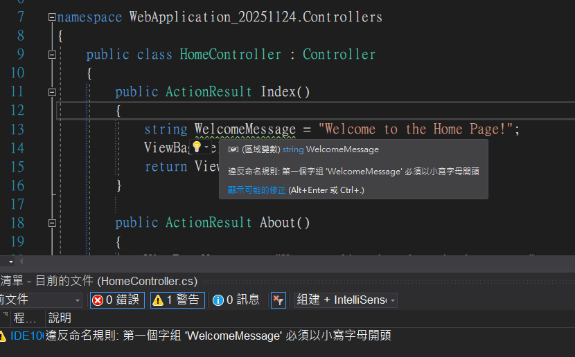
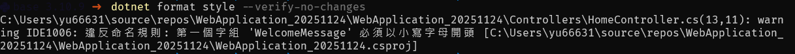
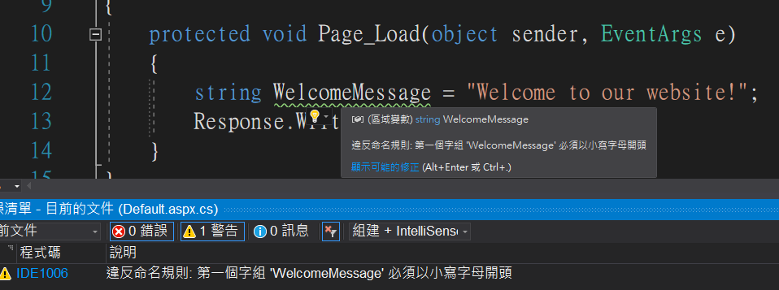
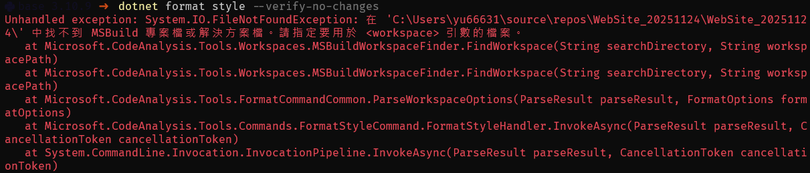
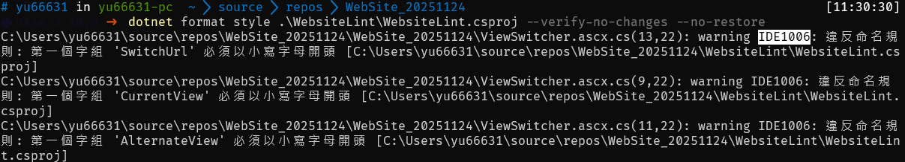

處理 ASP.NET Web Site 專案程式碼風格檢測
在 C# 專案中，程式碼風格的一致性通常使用 dotnet format 搭配 .editorconfig 來管控。但在處理舊版 C# 專案時發現 dotnet format 無法使用，深入了解後才知道舊版架構分為 Web Site 和 Web Application 兩種。其中 Web Application 可以直接使用 dotnet format 處理風格問題，但 Web Site 類專案只能仰賴第三方工具，測試了幾個工具後，都無法捕捉到與 IDE 顯示相同的風格警告訊息。
目標是希望在 CI/CD 流程中，能透過 dotnet format 自動捕捉風格不一致的問題。記錄一下最終找到的解決方案。
註：以下使用小駝峰（camelCase）命名檢查作為示範
Web Site vs Web Application
在 ASP.NET 開發中，專案類型主要分為兩種：
- Web Application（Web 應用程式）
- Web Site（網站專案）
最快區分方式：根目錄是否有.csproj檔案。有就是 Web Application
Web Application 風格檢測
對於 Web Application 專案，程式碼風格檢測相當簡單，可無縫使用 dotnet format：


Web Site 風格檢測，遇到的問題
Web Site 專案因無法執行 dotnet format。想在 CI/CD 流程中自動檢查程式碼風格就卡住了。


解決方案：Lint 專案包裝法
經過測試，找到一個解決方式：建立一個輔助專案，將 Web Site 的所有 .cs 檔案包入，間接實現風格檢測。
步驟 1：建立 Lint 專案
在 Web Site 專案旁邊建立一個空的類別庫專案（與 Web Site 並排）：
dotnet new classlib -n WebsiteLint -f net9.0 |
建立後的專案結構：
folder/ |
步驟 2：編輯專案檔包入原始碼
編輯 WebsiteLint\WebsiteLint.csproj，將 Web Site 的所有 .cs 檔案包入：
<!-- WebsiteLint.csproj --> |
說明：
Include="..\WebSite_20251124\**\*.cs"：遞迴包含所有.cs檔案Exclude：排除bin、obj等編譯資料夾，以及WebsiteLint本身（避免循環參照）Link：保持原始檔案路徑結構，方便追蹤問題
步驟 3：執行風格檢測
現在可以對 Lint 專案執行 dotnet format 了：
# 只檢測風格（根據 .editorconfig） |
參數說明：
--verify-no-changes：只檢查不修改--no-restore：不還原，加快執行速度--verbosity minimal：簡化輸出訊息
執行成功的畫面：

總結
透過建立輔助專案的方式，解決 ASP.NET Web Site 無法用 dotnet format 的問題，就能整合到 CI/CD 流程中，這個方法的好處是不用改動原本的 Web Site 專案結構，只要設定一次 Lint 專案，之後新增的 .cs 檔案都會自動被包含進來。雖然無法改變 Web Site 本身的技術限制，但至少在程式碼風格層面能與現代專案接軌了。